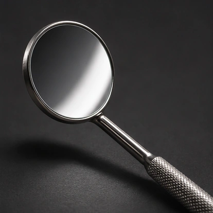
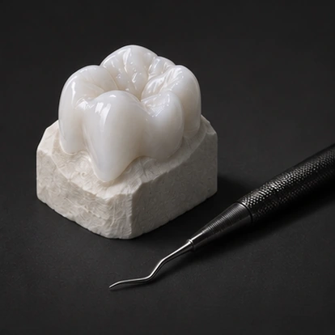
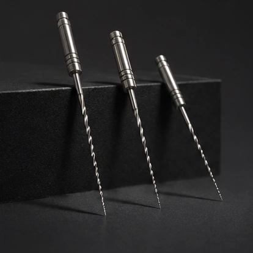
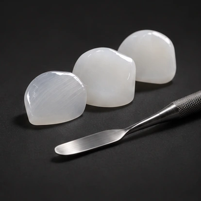
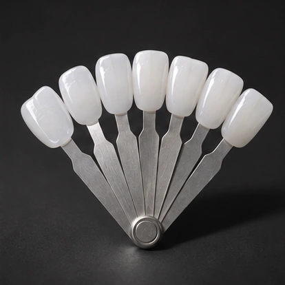
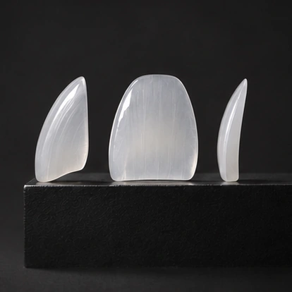
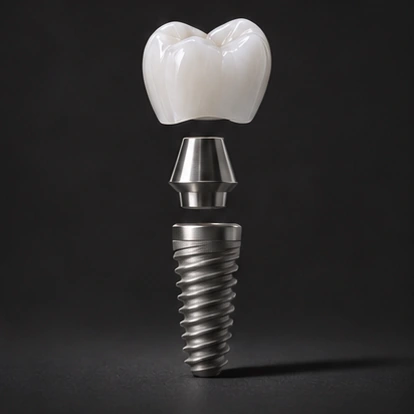

Варианты восстановления зуба коронкой. В прайсе представлены металлокерамика, диоксид циркония и E-max.

Первый визит, чтобы обсудить, что вас беспокоит, и разобраться в вариантах лечения.
Ультразвуковая чистка и полировка. В прайсе есть два варианта комплексной гигиены, в том числе с Airflow.

Лечение кариеса с восстановлением зуба фотополимерным материалом.

Первичное лечение и перелечивание корневых каналов. Стоимость восстановления зуба уточняется отдельно.

Восстановление формы переднего или жевательного зуба. Стоимость зависит от объёма работы.

Отбеливание в клинике. В прайсе стоимость указана за одну челюсть.

Керамические виниры. В прайсе приведена стоимость одной единицы.

Ортопедические работы на имплантатах, включая коронки с винтовой фиксацией.